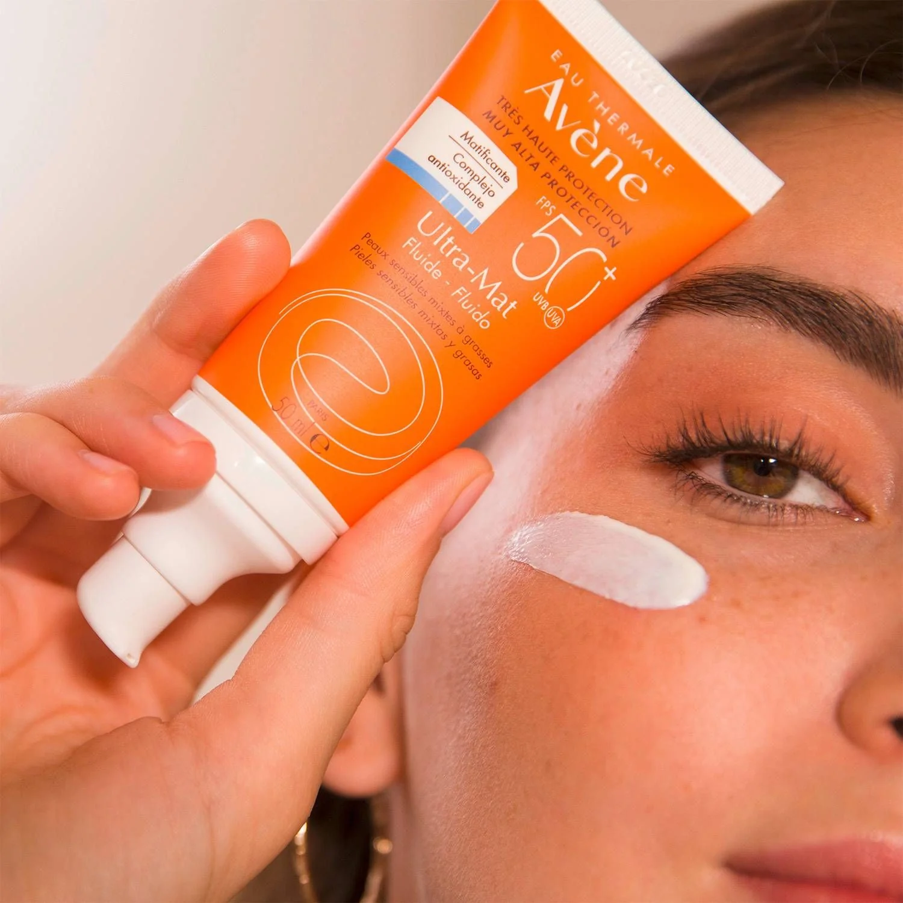
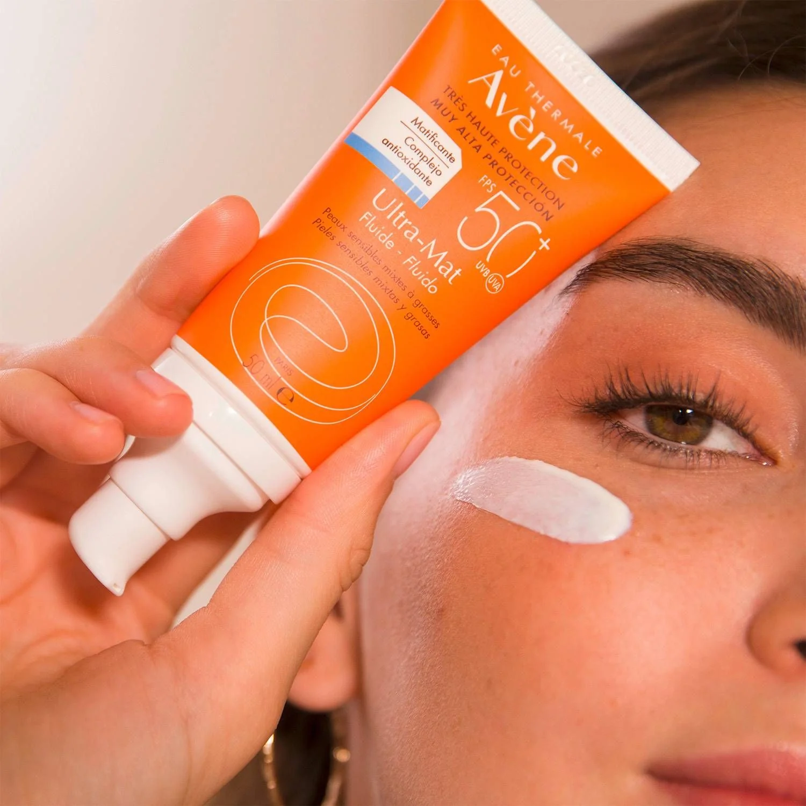
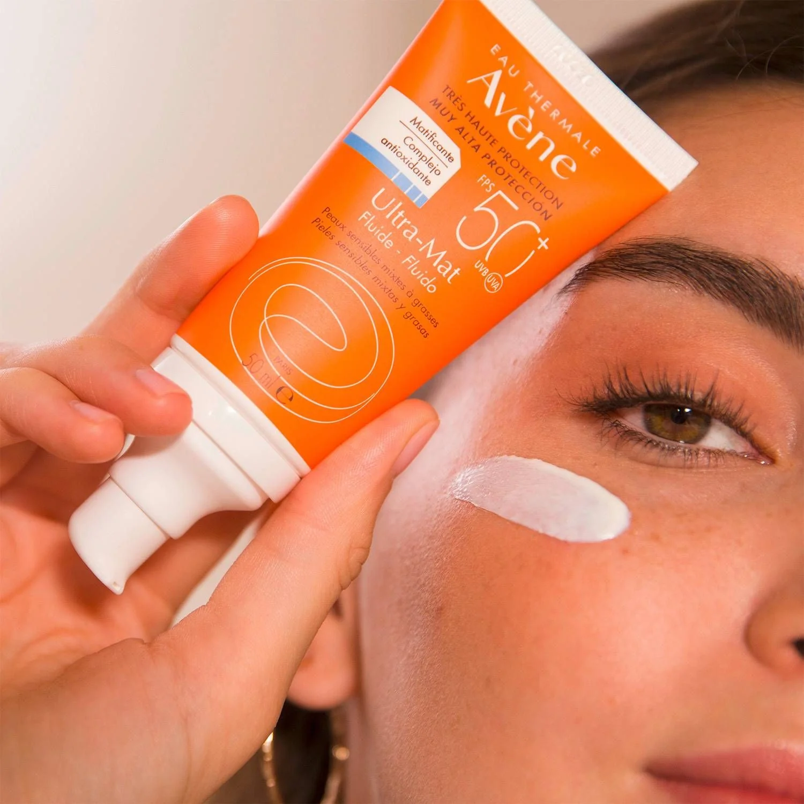

Descubre cómo cuidar tu piel y mantenerla saludable
El skincare es el conjunto de prácticas y productos que usamos para mantener nuestra piel limpia, hidratada y protegida. No solo mejora la apariencia, sino que también previene problemas como el acné, la resequedad y el envejecimiento prematuro.
